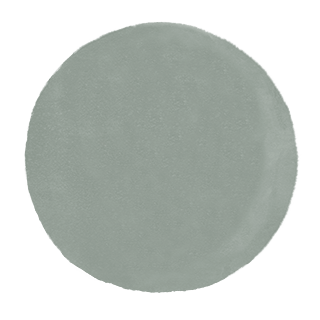

DR. RACHEL MILLER
The Japanese Digestive Hack: Take This 7-Second Quiz to See If It Can End Your Bloating and Constipation for Good!
How often do you go to the bathroom with no trouble?

Every day
3–4 times a week
Less than twice
Do you ever feel so bloated you need to loosen your clothes?
Yes, often
Sometimes
No
Do you avoid going out or eating certain foods because of your stomach?
Yes, often
Sometimes
No